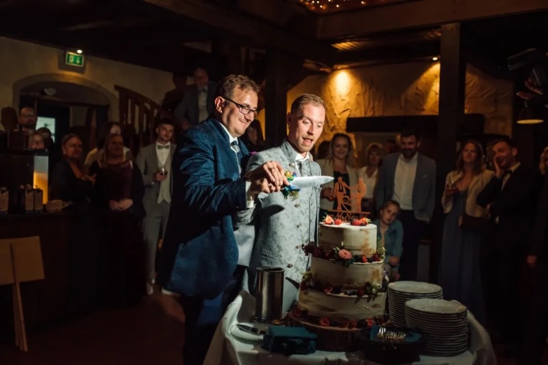
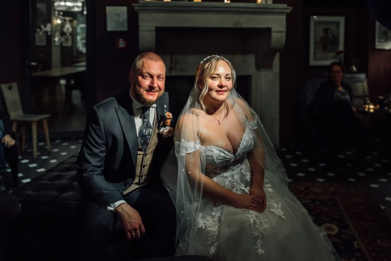
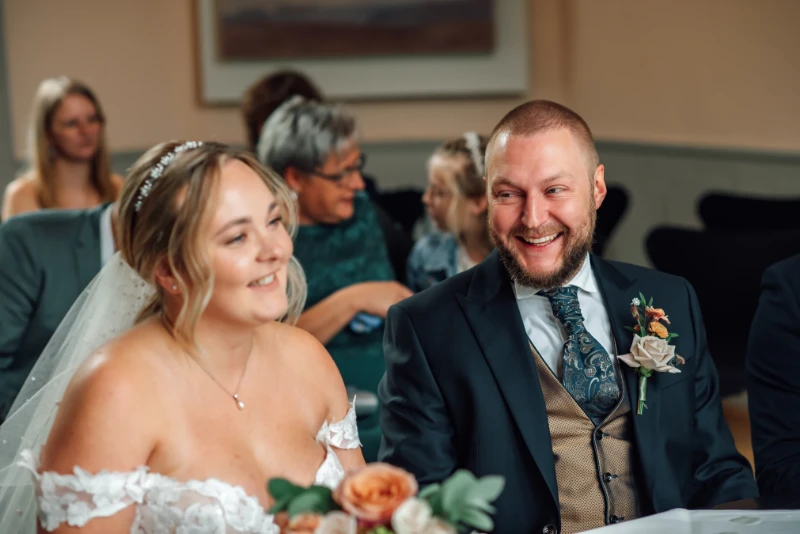

Erst Stimmung + Positionierung, dann direkter Weg zu Portfolio und Anfrage.
R & A
Renthof Kassel
Das hier ist ein alternativer Entwurf für deine Startseite: mehr Weißraum, klarere Bildführung und ein stärkerer Editorial-Look. Fokus auf weniger, aber größere Bilder, damit jede Szene wirklich wirkt.



Die Startseite zeigt nur Signature-Momente und führt dann in vollständige Reportagen. Dadurch wirkt dein Stil klarer, hochwertiger und vertrauenswürdiger.
Dieser Entwurf setzt auf mehr Raum, größere Bilder und klare Entscheidungswege. Weniger Reiz, mehr Vertrauen.
Erst Stimmung + Positionierung, dann direkter Weg zu Portfolio und Anfrage.
Auf der Startseite nur 12-18 wirklich starke Bilder statt unkuratiertem Mix.
Mehr Abstand hebt den Wert deiner Arbeit und führt den Blick natürlicher.
Von Signature-Momenten gezielt in vollständige Hochzeitsreportagen führen.
In diesem Konzept wirkt Schwarzweiß bewusst und selten. Farbe bleibt der Hauptlook, Schwarzweiß unterstreicht emotionale Spitzenmomente.


Empfehlung für Homepage + Portfolio: etwa 85-90% Farbe, 10-15% S/W. Dadurch bleibt dein Gesamtlook konsistent und Schwarzweiß fühlt sich nach bewusstem Stilmittel an.
"Wir haben uns nie gestellt gefühlt und trotzdem sind die Bilder voller Magie."
Google Bewertung"Unauffällig im Hintergrund, aber in jedem entscheidenden Moment genau da."
Hochzeitspaar aus Kassel"Die Reportage ist wie ein Film unseres Tages. Echt, lebendig, zeitlos."
Hochzeitspaar aus GöttingenWenn dieser Stil für dich passt, können wir ihn als neue Startseite integrieren und danach gemeinsam feinjustieren: Reihenfolge, Bildauswahl, Texte, CTA und SEO.